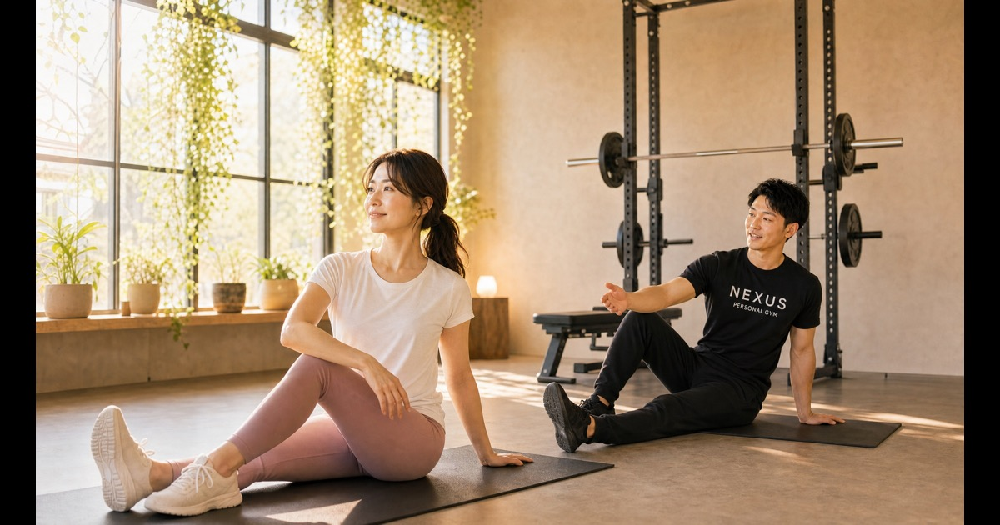
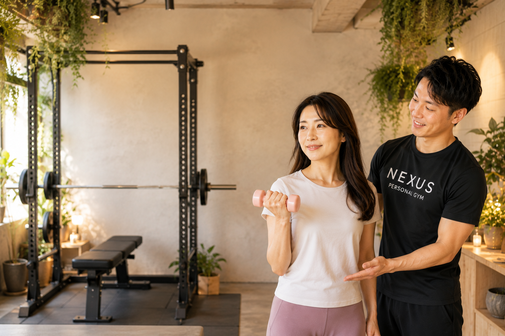

— Latest Articles
最新の記事

結婚式までに痩せたい花嫁へ｜ブライダル集中プラン【全国71店舗】
挙式日から逆算するNEXUSのブライダル集中プラン。60分24回＋食事指導付き192,000円〜。完全個室・女性会員85%、全71店舗で受付中。
読む →
パーソナルジムが続かない7つの理由と、続く人がやっている対策
続かないのは意志ではなく仕組みの問題。7つの理由と対策、継続率96%のNEXUSの違いを実際の口コミとともに解説。

月額8,000円〜のパーソナルジム「NEXUS」徹底紹介｜女性に選ばれる隠れ家ジム
女性会員85%・完全個室・手ぶらOK。全国の隠れ家パーソナルジムNEXUSを徹底紹介。無料体験実施中。

パーソナルジムが続かない人の5つの共通点
入会前の段階で、続く人・続かない人はほぼ決まっている。71店舗の現場で観察した5つのパターン。

産後ダイエット、いつから始めていい？医師確認＆体験談
産後2〜3ヶ月目が目安。71店舗の現場で見た判断基準と3つの体験事例。
30〜40代女性のための「無理なく続く」ダイエットルーティン
共働きで時間がない毎日でも、無理なく続けられるダイエット習慣を、NEXUSのトレーナー監修でお届けします。